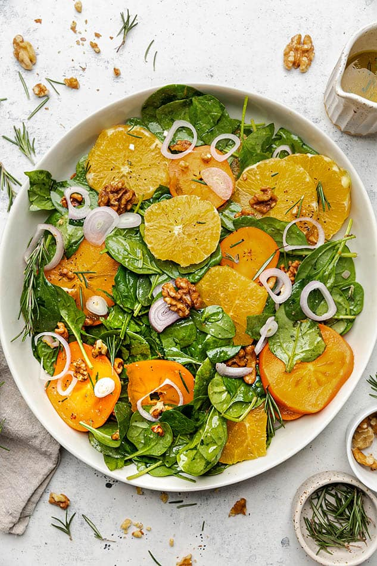

Spinach and Orange Salad

Spinach Orange Salad is full of fresh spinach, juicy orange slices, crunchy walnuts and will brighten up any winter day. It’s dressed with a zesty orange vinaigrette and sprinkled with optional dairy-free feta to top it off and makes the perfect healthy lunch or side for dinner! Gluten-free, vegan with low carb and Whole30 friendly.
Ingredients
- 1/2 pound fresh baby spinach
- 3 medium oranges, peeled and diced
- 1 cucumber, sliced
- 1/2 cup red onion, sliced thin
- 1/3 cup walnuts, chopped and toasted
- Black pepper to taste
- Balsamic vinegar to taste
Steps
- To assemble the salad, put the spinach, oranges, cucumber, onion, and walnuts in a large salad bowl.
- Cover and refrigerate until ready to serve (up to 12 hours).
- When dinner is ready, toss the salad gently to combine the ingredients. Allow everyone to top their own salad with black pepper and balsamic vinegar.